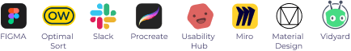

UX/UI Case Study
An application that helps its users to organize and improve their well-being in a playful way.

The Project
This project has a special place in my resume, as it marks the beginning of my UX Design journey. During my educational 6-month lasting course I got profound insights into the methods of User Experience Design.
Objective
Create a responsive application with the ability to fulfill a holistic need of managing and improving all health-related issues of the users.
Role
User Research
User Experience Design
User Interface Design
Duration
June-November 2022
Tools
Skills and methods
Problem Statements
Competitive Analyses
User Stories
Interviews
Affinity Mapping
User Personas
User Journeys
Task Analyses
User Flow
Site Map
Card Sorting
Mid- to High-Fidelity Wireframes
Prototyping
Usability Test
Preference Test
Visual Design
Material Design
Task Flows
Design System
Design Collaboration
Discover
#1 A Problem and a solution
The project brief sketched a product that should help its users to increase their health and wellbeing with features and tools that helps “to stay on top of their health needs and health conditions”.
And I thought: Please not another self-optimization tool, that seems to help but actually just makes the user feel miserable. Does the world need another calorie tracker?
So for me I already saw problematic frames, that I wanted to adress in my project. From the very beginning I wanted to interpret this project into a sensitive tool, that is on the one hand holistic in its features, but on the other hand neither overwhelms the user with solutions, that are not really sustainable or healthy.
First Problem Statement
Health interested people need a way to educate themselves about what an actually healthy lifestyle means, because all of those consume-orientated health devices made people confused about this topic.
We will know this to be true, when we see that people can overview their health in the responsive web application and have better access to information and guidelines, that are scientific proven.
#2 A Story and an idea
But what actually belongs to health?
Have you heard of the chicken story?
A conversation with a good friend came into my mind from some years ago. I was telling her I was often not feeling great, and she asked me what I was doing that specific day.
After I told her my daily tasks, she fastly answered: „You did not feed all of your chicken!“
I looked at her with big questioning eyes, when she laughed and continued: „Your health is like three chickens. One has the name 'body', one has the name 'mind' and one has the name 'soul'. For being happy and healthy you have to feed every single one of them. The body-chicken you feed with healthy food and activity. The mind-chicken you feed with education and learning something new. The soul-chicken you feed with gratefulness and family and friends.“ And indeed on that specific day when I was miserable, I did not feed those chickens.
So why not
feed some chicken?
Let's make a
!tamagotchi!
As the name of
this project is "Olive",
we create the tamagotchi
as an olive tree.
OLIVE
the healthy tamagotchi
Refined Problem Statement
While establishing new habits can sometimes be an unattractive and demanding job, using a tamagotchi theme could be a fun and lightweight method to hold the motivation of the users high without too much moralization.
#3 One Competitor and another one
I also conducted a competitor analysis, in which I used a S.W.O.T profile to get insights on the market’s current products. For this, I had a closer look at the native application of the health insurance “BARMER”, as well as the lifestyle and healthy habit application “Fabulous”.
Define
#1 Persons and Personas
To step out of my very own head, I conducted 3 User Interviews, that took each around half an hour. For this purpose I prepared a set of questions and an Interview Script.
My interviewees matched my target group to be in the millennial generation to ensure the potential users are familiar with the concept of a tamagotchi. I also choose this target group, as I think people in this age range begin to care about health.
After taking the interviews, I prepared audio scripts for each participant to locate all relevant content. With the help of affinity mapping, I received great insights into people's wishes and concerns about a health-related digital device.

Insights of the User Interviews
Health is very individual from person to person, but there are similarities. It needs to be asked about the lifestyle to create meaningful content.
Time is a precious asset. Users need tools and features, which help with health condictions, but do not take time. The goal is to save time.
There is quite a lack of knowledge and a lot of uncertainty about what is healthy and what is toxic. Education is wanted and needed, but in a way that is not overwhelming.
Creating Personas
I have to admit this was one of my most favourite tasks in the process.
Who would have thought my love to create shiny background stories for strangers would increase into a professional skill.
But as much as I like both personas, I decided to make Sandra to my main persona.
Nevertheless Timo's needs should stay in my mind, as he reminds me to keep the application as optional as possible.
#2 User Journey, Task Analyses and User Flow
* For this project I have also created a User Journey for Timo, where his need for a trustable source for education and guidelines is at the center of attention. Furthermore, the Task Analysis is dedicated to this feature, as well as the User Flow. Additional to the shown task for Sandra, I also created a Task Analysis and a User Flow for the task “Add a doctor to profile”.
Ideate
#1 Sitemap
#2 Card Sorting
After the big challenge to collect all features that shall find a place in this overall concept of a health and wellbeing app, the next step was to sort those features and also to create a simple and intuitive path to get to a list of features.
The card sorting also revealed the participants had very different feelings to group the features into categories. It went from only two groups to five groups. This gave me the freedom to sort the features customized to the health tree and in which scenario it was better to use more categories.
#3 Refined Sitemap
What I do like about this concept is, it allows endless growth of the product. In a real-world environment, this would be a very great possibility to add features, tools, and content from time to time, even after already releasing the product.
For now, as I am a solo designer with limited time I concentrated on three main features to bring this product to life: a calendar, an educational area, and a mindfulness section.
As my father - a passionate chef - use to say:
Hört!Hört!
It is better to have less of a good sauce, than to have much of a bad sauce.
Design
#1 Low fidelity Wireframes
The most challenging part of this process was to visualize my ideas, which already worked well in sitemaps, user flows, etc., in sketched wireframes.
Especially how every feature would surround the healthy tree tamagotchi was a major question. I created several wireframes to help me make a good decision.
In all options, the health tree would symbolize the health of the user and also would work as the navigation pattern, as every branch should represent another feature/part of the user's health and should be clickable to lead to another page.
Option 1
pro bottom navigation pattern is common and familiar
contra the health tree as the center of the device would become obsolete.
Option 2
pro bottom navigation pattern in form of the health tree tamagotchi
contra this would take a lot of precious space
Option 3
pro health tree as navigation pattern is in the heading and slideable for space saving purpose
contra the navigation at the head would make it harder to reach
My Decision
After weighing the pros and cons and consulting my course mentor, I decided to vary the third option. Bringing the health tree to the bottom would make it easy to reach. This would be the home button and every navigation would lead via the big health tree in the home screen. This would give the device a clear task flow and puts the tree in the center of attention.
Adding an Appointment/ Follow a Recommendation
Search an Article about a Health Topic
Practise Mindfulness with the Gratitude Journal
Onboarding Process
Test
#1 Conducting Usability Tests
The test was using moderated test methodology optionally in-person, but also remotely. The Test included a short briefing, a task performance of OLIVE on a mobile app, and a follow-up questionnaire.
The usability test required 6 participants. The participants ideally were in the age range of 27-40 years old, have used a tamagotchi before, and were located in Germany. Participants for the moderated remote tests were recruited from the personal network of the researcher by e-mail or messenger. Participants for the moderated in-person tests were recruited with „Hallway Testing“.
Recruitement
Consent Form
Usability Test Plan
Usability Test Script
Moderated Remote Tests
Moderated Hallway Tests
Affinity Mapping
Rainbow Sheet
#2 Test results
ISSUE 1
Meaning of the category icons is not clear.
ISSUE 2
Home Button is not used.
ISSUE 3
“Add Appointment”-Task Flow is unclear.
ISSUE 4
Hierarchiy of Education Header is disharmonic.
Conclusion
The usability test required 6 participants. The participants ideally were in the age range of 27-40 years old, have used a tamagotchi before and were located in Germany. Participants for the moderated remote tests were recruited from the personal network from the researcher by e-mail or a messenger. Participants for the moderated in-person tests were recruited with „Hallway Testing“.
#3 Preference Testing
I conducted a Preference Test to get help from potential users for the decision by which design style I should go for my product. Both versions kept a homage to the 90’s aesthetic in their designs, but with 90% rate the version with the more clear and modern style won.
Refine
#1 iterations
Reworking the Navigation Pattern
One observation in the usability testings were the participants were looking for a home button in the heading of the screen. Therefore nearly all of the participants used a path with the back button to reach the home screen.
By bringing the actual home button to the head of screen I went after the intuition of my participants. In the next step I reworked the task flows and was able to remove the back button, so the user only has the option to use the actual home button. This simplified the user flow immense and ensured a frictionless usability. By downsizing the button and bring it to the left corner of the screen I also won more spacing in the header, which allowed me to add a heading with the category and icon.
With the new iterations I reacted on issue 1 and issue 2 of the usability tests.
Reworking the CTA
For the task to “follow a recommendation my participants communicated a insecurity about what actions need to be made.
As a solution for this issue I redesigned the CTA button and also added a clear language for the CTA.
Redesigning the Education Header
Participants were using firstly the category slide which shows popular topics to find special content.
Eventhough this is not a problem, but I decided to create a more equal color scheme with the search bar and the slide option. This showcases the hierarchy of this page better.
#2 The Evolution of the appointment form

By adding Visual Design Principles, the guidelines of Material Design and Emotional Design, as well as grids and accessibility principles I evolved a clear and intuitive appointment form.
UI Elements of the final appointment form
Deliver
#1 Design Documentation
#3 Final High Fidelity Prototype
Do you
remember Sandra?
This is how she would use the app:
Find an article about “Meal Preparation” and save it for later
Alarming leafs! Follow the recommandation.
Make an entry in your Gratitude Journal.
Remember the article! Read it to the end.
What else?
What now?
As I mentioned earlier, what I do really love about this concept is the seemingly endless amount of possibilities that can be added in this product. But before ideating even more features and tools for this device, the product need to be finished in its basic concept.
Next steps for a further developement would be:
the medical area and fitness section need to be developed
more scenarios for health-related appointments need to be added (e.g. health courses)
creating medical trackings
a screen for the guided meditations has to be built
and probably a thousand things more
Think further...
If I allow myself to conceptualize this product even further, I think the keyword “accessiblity” would come into my mind.
The original product does not ask very much about the user's profile, to allow the Timo-Personas under us fast access to the app. But by using the medical area the user would be asked about a medical profile to ensure personalized recommendations.
This profile can even include the possibility to change the feature selection that the heath tree offers. What if one persona suffers from OCD or depression, are there methods that would provenly help such users?
Or: Should branches be addable or removable? How far can the health tree grow? Should the application start with a small plant at first? What else rewarding could be implemented instead of the shown animations?
THAT'S IT!
Thank you very much for reading about my case study.
I would love to contribute on more inspiring projects, so let's work together!